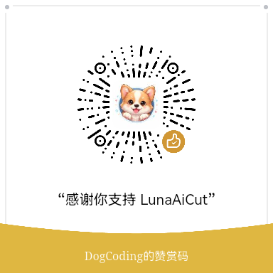

本次更新内容
Windows GPU 导出、色彩揭晓创意、HSL 自定义调色等功能现已上线。
关注我的抖音，第一时间获取版本更新通知和使用技巧
打开抖音扫码关注。
导入、筛选、整理、编辑和导出都在同一个桌面流程中完成
从当前兼容相机或本地目录获取照片和视频，进入统一的素材流程。更多设备接入能力将随兼容验证持续扩展。
按日期浏览、筛选和预览素材，也可让 AI 分析完整照片与视频，辅助分组和挑选，再批量下载或进入工作台。
完成裁剪、视频分段、基础调色、HSL、曲线和 LUT 处理。一个视频划分为多段后，可按片段分别导出。
识别天空、水面、人物和主体等区域，只调整需要改变的部分；也可使用形状、渐变和画笔创建选区，视频支持蒙版跟踪。
使用内置或自定义 LUT 塑造画面风格，为不同画幅添加创意边框，并按素材信息匹配或自定义水印。
批量输出编辑结果，查看每项任务进度；视频片段可以分别导出，也支持 Live Photo 等素材工作流。
无论素材来自相机还是本地目录，都能沿用同一套流程
可以连接当前兼容的相机，也可以直接导入电脑中的照片和视频。选择来源后，素材会进入统一的浏览与创作流程。
媒体库按拍摄日期自动分组，可通过顶部标签在「全部」「照片」「视频」间快速筛选。点击缩略图即可查看照片或播放视频，也可以放大、缩小和拖动检查细节。
可以手动框选多个文件，也可以把完整照片和视频交给 AI 辅助分析、分组和挑选；确认后再批量保存或送入工作台。
将照片或视频打开到工作台，完成裁剪、视频分段、调色、LUT、边框与水印处理。还可以识别天空、人物、主体等区域进行局部调色，并让视频蒙版跟随目标移动。
导出时可以选择水印样式、位置和大小，并保留工作台中的调色、蒙版、LUT 与边框效果。支持批量导出，任务进度实时可查。
视频在工作台划分为多段后，可以将各片段分别导出；完整原素材仍保留在素材库中，便于继续整理和再次创作。
Luna AI Cut 目前由个人利用业余时间开发和维护。
如果它为你节省了时间，欢迎自愿支持项目持续更新。
赞助不会影响软件的正常使用，
也不代表购买功能或技术服务。
提交 Bug、分享软件、参与测试、
给项目点一个 Star，都是对项目很大的帮助。
